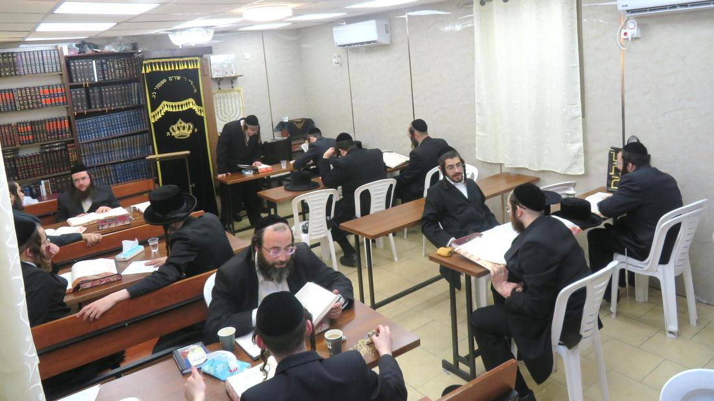
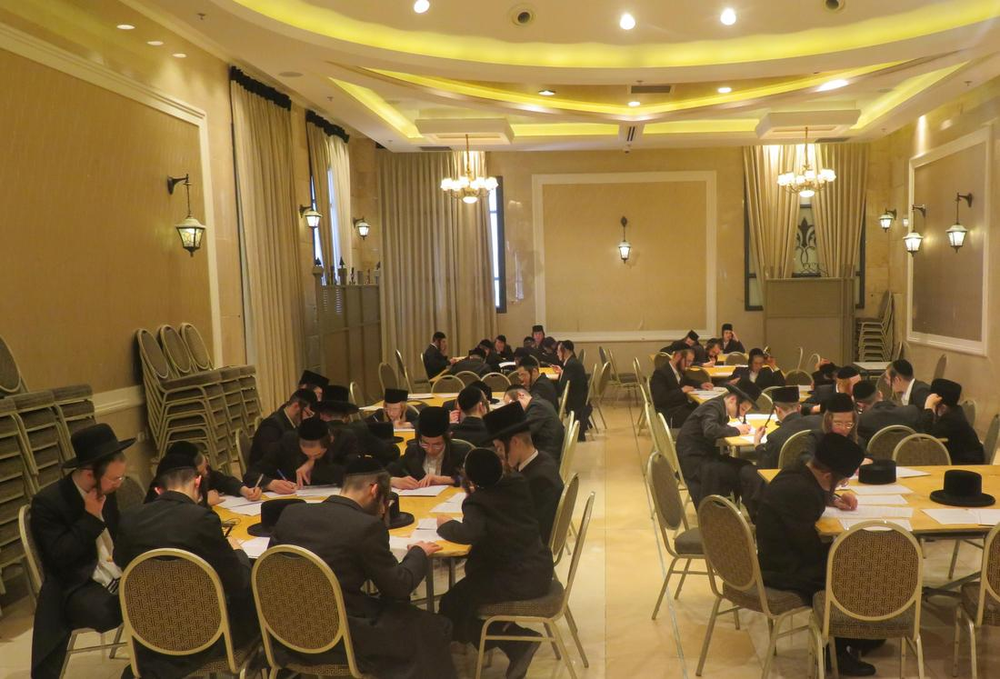
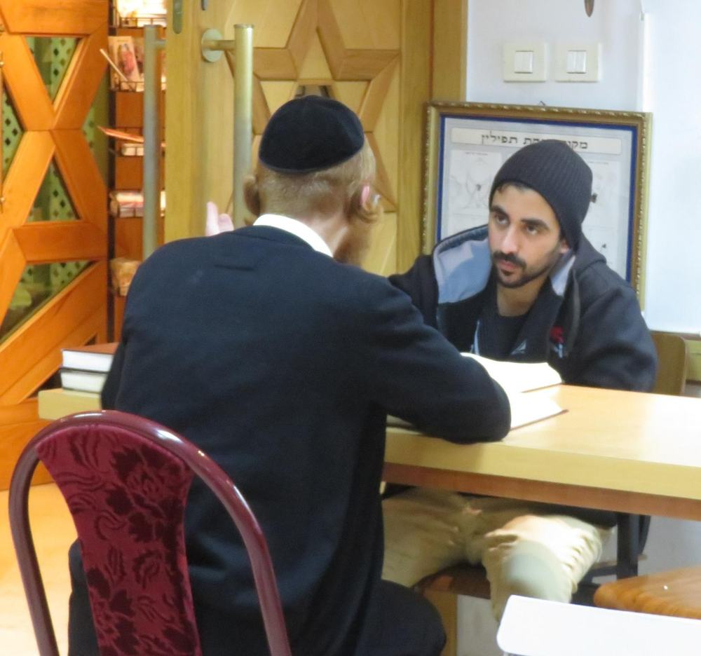

כולל אברכים
סדרי לימוד קבועים לאברכים, עם מלגות חודשיות שמאפשרות התמסרות מלאה ללימוד.
עמותה רשומה • מס' עמותה
אנחנו מלווים ילדים, בחורים ואברכים בדרך אל התורה — ממדרשיית הקירוב ועד הכולל, ומהשיעור הראשון ועד לבית של תורה. כל תרומה הופכת לשעת לימוד.
מי אנחנו
עמותת מרכז התורה והחסד קמה מתוך שנים של פעילות יומיומית בשטח — בבית המדרש, במדרשיות הקירוב ובשיעורים. ראינו ילד אחד שאין לו מי שילמד איתו, ובחור אחד שמחפש בית, והבנו שצריך מסגרת שתיתן מענה אמיתי ומסודר.
מאז אנחנו מפעילים מסגרות לימוד קבועות, מלווים משפחות, ומחזיקים כולל אברכים שמקיים סדרי לימוד רצופים. הכול נעשה בשקיפות מלאה, בליווי רבנים, ובאחריות כלפי כל שקל שנתרם.
"והגית בו יומם ולילה"
יהושע א׳, ח׳
שכל ילד יקבל את ההזדמנות ללמוד, שכל אברך יוכל להתמסר לתורה בלי דאגות פרנסה, ושכל יהודי שמחפש דרך — ימצא דלת פתוחה.
מה אנחנו עושים
חמש מסגרות שפועלות במקביל, כל ימות השבוע.
סדרי לימוד קבועים לאברכים, עם מלגות חודשיות שמאפשרות התמסרות מלאה ללימוד.
שיעורים ומפגשים שבועיים לנוער ולמבוגרים, בסביבה נעימה ובגובה העיניים.
תוכנית מסודרת שמכינה את הילד להנחת תפילין, לקריאה בתורה ולכניסה לעול מצוות.
מענה אנושי על כל חלקי התורה, 24 שעות ביממה (מלבד שבת) — לכל שואל ומתעניין.
התרעות חכמות על זמני היום ההלכתיים, כדי שאף זמן תפילה לא יתפספס.
התוצאות בשטח
שותפות
בחרו את סכום התרומה — או כל סכום אחר. כל תרומה מגיעה ישירות לפעילות.
₪52
מממן שעת לימוד אחת של אברך בכולל.
לתרומה₪180
מלווה ילד אחד לאורך חודש של שיעורי הכנה לבר מצווה, כולל חומרי לימוד.
לתרומה₪1,000
שותפות קבועה שמאפשרת לנו לתכנן קדימה ולהרחיב את הפעילות.
לתרומהאפשר לתרום בכרטיס אשראי בסליקה מאובטחת, בהוראת קבע חודשית, בהעברה בנקאית או בביט — הכול מרוכז בעמוד התרומה.
לעמוד התרומהלתרומה בהיקף גדול או להקדשה לעילוי נשמת — צרו איתנו קשר ונשמח לסייע.
רגעים מהשטח
רגעים קטנים מתוך סדרי הלימוד, הכולל והשיעורים. לחיצה על תמונה מגדילה אותה.




לפני שתורמים
כל מה שחשוב לדעת על התרומה ועל הפעילות.
כן. העמותה מנפיקה קבלה מוכרת לפי סעיף 46 לפקודת מס הכנסה על כל תרומה, והקבלה נשלחת אליכם במייל תוך זמן קצר מרגע התרומה.
פרטי כרטיס האשראי לא עוברים דרך האתר שלנו ולא נשמרים בו בכלל. הסליקה מתבצעת אצל חברת הסליקה "נדרים פלוס", בתקן אבטחת המידע PCI-DSS. האתר עצמו מוגש בחיבור מוצפן (HTTPS) בלבד.
בוודאי, וזו הדרך שהכי עוזרת לנו. בעמוד התרומה בוחרים "הוראת קבע חודשית", קובעים סכום ומספר חודשים, ואפשר להפסיק בכל שלב בפנייה אלינו.
למלגות לאברכי הכולל, לשיעורי ההכנה לבר מצווה, למדרשיית הקירוב ולתפעול קו המענה התורני. אנחנו מדווחים לתורמים על הפעילות, ותמיד אפשר לבקש פירוט — נשמח להראות.
כן. בעמוד התרומה יש שדה ייעודי להקדשה, והשם ייכתב וילווה את הלימוד. להנצחה מיוחדת או לתרומה בהיקף גדול — צרו קשר ונסייע אישית.
פשוט מאוד — משאירים פרטים בטופס למטה או מתקשרים, ואנחנו חוזרים אליכם עם כל הפרטים על המסגרת המתאימה.
נשמח לשמוע
לשאלות, לתרומות, לרישום למסגרות או לכל בקשה אחרת — אנחנו כאן.